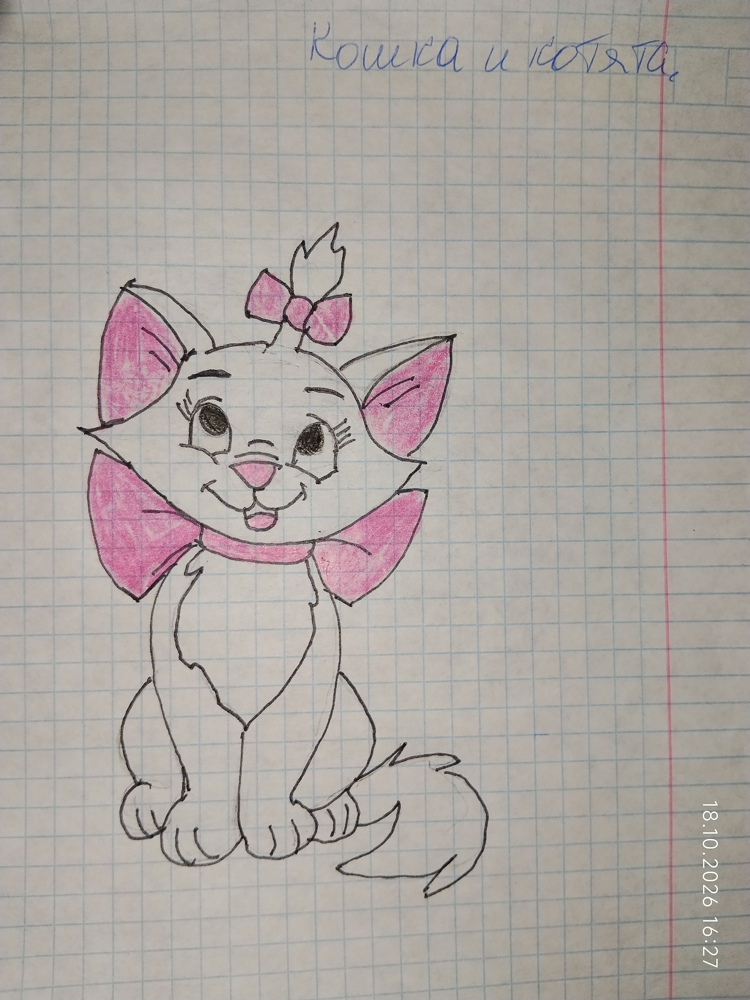

(Рисунок: Кошечка с бантиком)

А ещё у нашей кошки родились котята. Им было примерно четыре месяца, когда случилась беда.
Кошка решила их покормить мышами. Но мыши, видно, были отравленные. Котята отравились. Трое погибли, двое выжили. А мать и последний котёнок — нет.
Когда ему стало плохо, кошка принесла его мне на подушку. Он бился в конвульсиях. Я проснулась, открыла глаза — и увидела его прямо перед собой. Я испугалась, закричала, позвала бабушку. Бабушка посмотрела и сказала, что отравление сильнее, чем у других, и он не выживет.
Он не выжил. До сих пор помню, как открываю глаза, а котёнок лежит на подушке в конвульсиях.
Это было моё первое столкновение со смертью. Тогда я поняла, что жизнь — это не только радость и игры, но и боль, и потери. И что животные чувствуют всё так же, как мы.